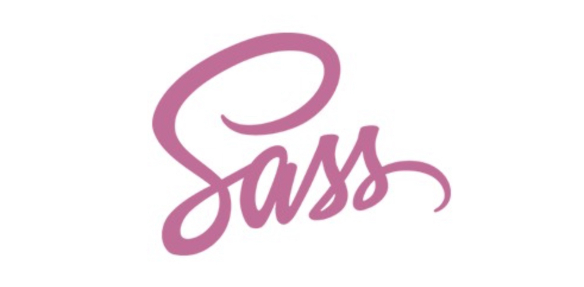

SASS 소개와 문법 학습하기
1일차
01_sass소개와 문법
2일차
02_sass문법_믹싱문법(mixing)_include기법
3일차
02_sass문법_믹싱문법(mixing)_include 응용
4일차
sass문법_mixin함수와 매개변수 응용하기
5일차
01_변수의 개념과 활용
02_중첩규칙
6일차
01_sass문법_import
02_sass문법_내장함수
03_sass문법_if문
04_sass문법_반복문